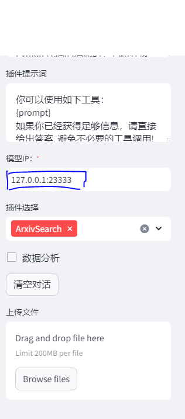
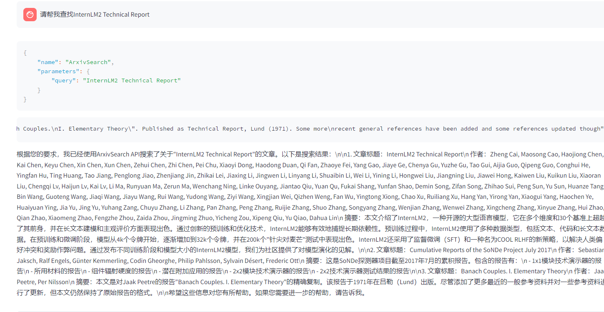

大模型实战营-初夏营-第六次课笔记
这是大模型实战营-初夏营第六次课的笔记
Lagent和AgentLego的关系
flowchart LR
subgraph Lagent
tool[调用工具]
subgraph AgentLego
tool_support[工具功能支持]
end
tool_output(工具输出)
tool --> tool_support --> tool_output
end
input(输入) --> LLM[大语言模型]
LLM --> IF{是否需要调用工具}
IF -->|否| output(一般输出)
IF -->|是| tool
tool_output -->|处理| agent_output(智能体输出)
从上图可以看出Lagent涉及的功能包括工具调用的全部流程，而AgentLego仅涉及开发可调用的工具
环境配置
conda 环境配置
运行如下命令在Intern Studio上配置Lagent和AgentLego运行所需的conda环境
1 | mkdir -p /root/agent # 存放agent所需文件 |
老套路，装完activate后用这两句清理一下缓存
1 | pip cache purge |
这次更猛，清了将近17GB的缓存
安装Lagent和AgentLego
运行如下命令安装Lagent和AgentLego
1 | cd /root/agent |
安装其他依赖
1 | # 安装lmdeploy |
动手实践
1. 直接使用 Lagent Web Demo
- 部署 web demo
首先我们要启动一个大模型API推理服务：
1 | lmdeploy serve api_server /root/share/new_models/Shanghai_AI_Laboratory/internlm2-chat-7b \ |
之后新建一个终端运行UI界面
1 | cd /root/agent/lagent/examples |
并修改大模型推理API地址为127.0.0.1:23333

就可以体验Lagent的 web demo了
- 体验 web demo
我们选择ArxivSearch插件，赋予大模型在ArXiv上搜索论文的能力，测试一下：

正确地找到了ArXiv上的相关论文
2. 直接使用AgentLego
我们将使用AgentLego内置的目标检测工具检测一张图片上的目标，AgentLego 所实现的目标检测工具是基于 mmdet (MMDetection) 算法库中的 RTMDet-Large 模型。
- 准备环境
- 下载demo文件
1 | cd /root/agent |
- 下载依赖包
1 | pip install openmim==0.3.9 |
- 准备调用代码
在agent目录下新建direct_use.py文件，并写入下面代码
1 | import re |
- 直接调用目标检测工具
运行python direct_use.py
得到目标检测输出：
1 | truck (345, 428, 528, 599), score 83 |
检测图像如下：